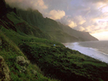

Віртуальна Русь. Бібліотека. http://ruthenia.info/txt/biletskv/slovnyk 
Учені поділяють останні 570 млн. років історії розвитку Землі на три ери: палеозойську ("палео" означає "стародавнє", "зоє" - "життя"), мезозойську ("мезо" - "середнє") і кайнозойську ("кайно" - "нове"). Ери відповідно діляться на періоди, а деякі періоди - ще й на епохи. Перший період палеозойської ери називають кембрійським, а всю історію Землі до нього - докембрійським періодом. Про життя в докембрійський період відомо дуже мало, оскільки копалини того часу трапляються дуже рідко.
Палеозойська ера
Мезозойська ера
Кайнозойська ера
Перша після докембрію ера в геологічній історії Землі. Настала близько 570 млн. років тому, тривала близько 340 млн. років. Палеозойську еру поділяють на шість періодів: кембрійський, ордовицький, силурійський, девонський, кам’яновугільний і пермський. Внаслідок тектонічних рухів палеозойської ери відбулися значні трансгресії й регресії моря. В результаті каледонської та герцинської складчатості в багатьох геосинкліналях утворилися гірські хребти (Аппалачі, Урал, Алтай, Саяни, Донецький кряж та ін.). На початку палеозойської ери у Південній півкулі виник материк Гондвана. У морських басейнах були поширені безхребетні, зокрема форамініфери, корали, молюски тощо; з’явились перші морськи хребетні — рибоподібні й риби. В середині палеозою виникли перші наземні рослини — псилофіти й плауновидні. Пізніше розвинулись деревовидні папороті, хвойні. Геологічні відклади, що утворилися протягом палеозойської ери, становлять палеозойську групу.
Настала 230 млн. років тому, тривала близько 163 млн. р. Мезозойську еру поділяють на три періоди тріасовий, юрський і крейдовий. На початку мезозойської ери існували два великі материки — Лавразія і Гондвана. Гороутворюючі рухи були пов’язані з кіммерійською складчатістю та мезозойською складчатістю. У пізньокрейдову епоху відбулася одна з найбільших в історії Землі трансгресій. Тектонічні рухи, що посилились наприкінці крейдового періоду, зумовили альпійську складчатість. Гондвана розпалась на окремі материки, Утворився Індійський океан. Рослинність мезозойської ери характеризувалася розвитком голонасінних, зокрема папоротей, саговників, хвощів, хвойних, з’явились перші покритонасінні (магнолія, фікус, верба, клен та ін.). Серед тварин переважали плазуни, у морях — молюски, з’явились перші ссавці, першоптахи (археоптерикси).
Найновіша ера в геологічній історії Землі. Настала близько 70 млн. років тому, триває й досі. Кайнозойську еру поділяють на три періоди: палеогеновий, неогеновий і антропогеновий (четвертинний). У середині палеогену відбулися значні трансгресії моря, пізніше — інтенсивне гороутворення. У кайнозої сформувались у сучасних обрисах материки й океани. Орографічні зміни зумовили зміни клімату і ландшафтів. На початку антропогену внаслідок похолодання значного розвитку набуло материкове зледеніння. Серед рослин були поширені покритонасінні, з’явились злакові. Наприкінці мезозою вимерли гігантські рептилії, динозаври, іхтіозаври та ін. У палеогенових морях переважали молюски, костисті риби й акули, з’явились кити, на суходолі — ссавці, поступово розвинулись хоботні, ведмедеві, людиноподібні мавпи, гризуни, комахи та ін. На початку антропогену з’явилась первісна людина.